k-Day 068｜戈壁色
5:15分來了一輛載貨的火車，睜開眼天已經大亮了。昨天凌晨似乎也有輛往扎門烏德方向的火車進站，大廳睡覺的人都上了那班火車。
收起椅子上的睡墊和睡袋，正在發呆之際站務員從售票房間走出來，對到眼後向他微笑點個頭遙遠地道謝，他對二十三號相當照顧。本以為他會和昨天幫忙裝胎的大哥一樣面無表情地看一眼後離開，畢竟凌晨上班還帶全妝的女子應該是狠角色，沒想到他竟然回了個微笑。
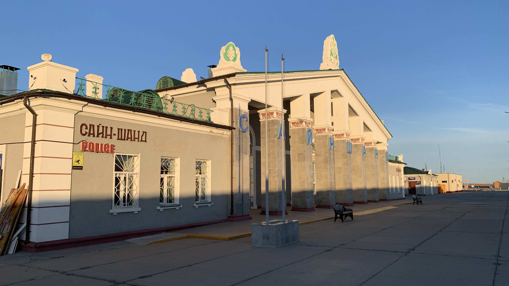
將行李重新裝到二十三號身上，手推著龍頭，腳卡在大廳門縫想擠出個空間出去時，剛剛的站務員走來幫我壓著門，這次有好好地用蒙語和他說謝謝。
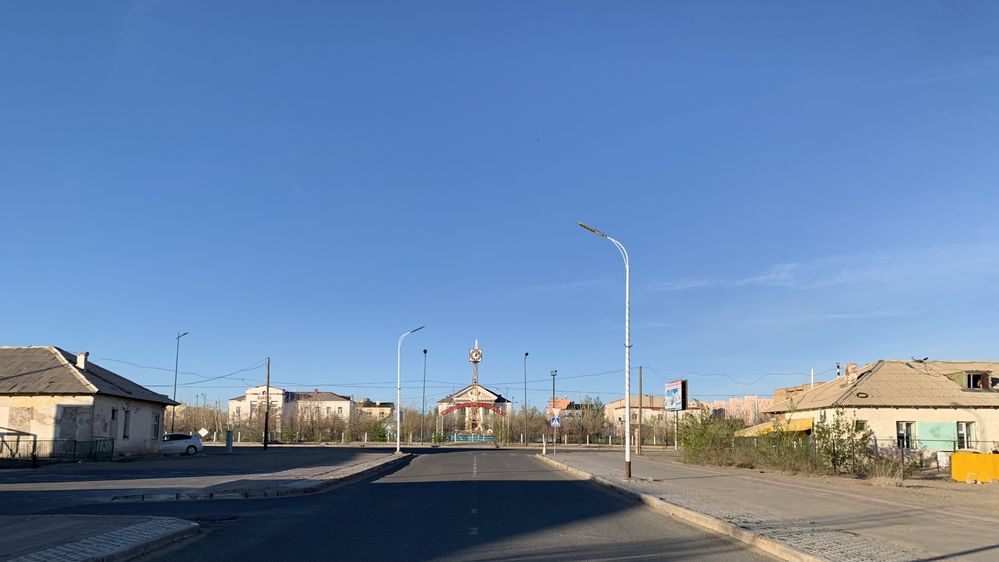
肚子很餓，早上六點不知道有什麼可以吃。昨天思考住宿問題時，將新買的蘋果汁遺留在公園長椅上，不知為何對此事很執著，決定在城裡買到新的蘋果汁才出發。
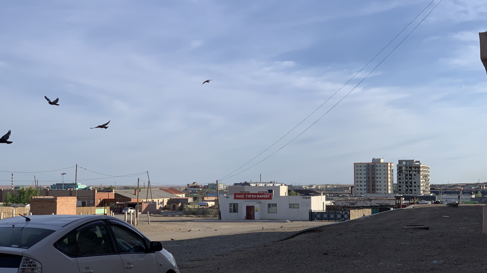
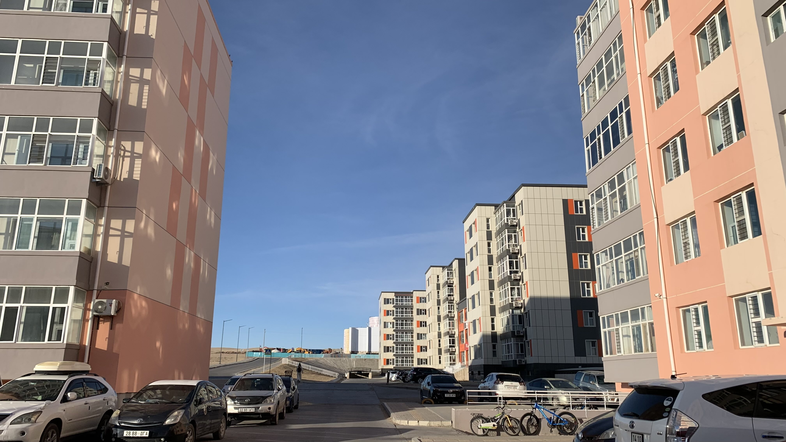
繞了好一陣子，無論是傳統雜貨店還是社區大樓的超市，能找到的商店都沒開門。
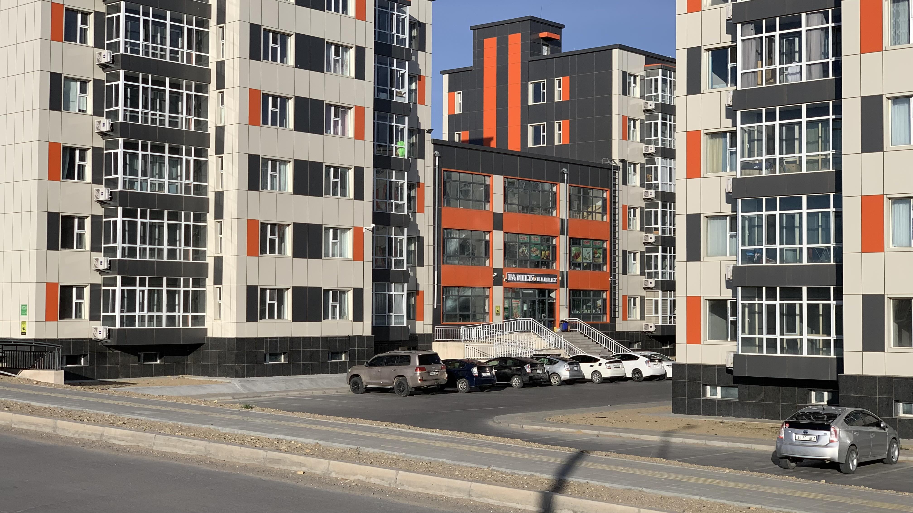
這裡的建築似乎很喜歡橘色。
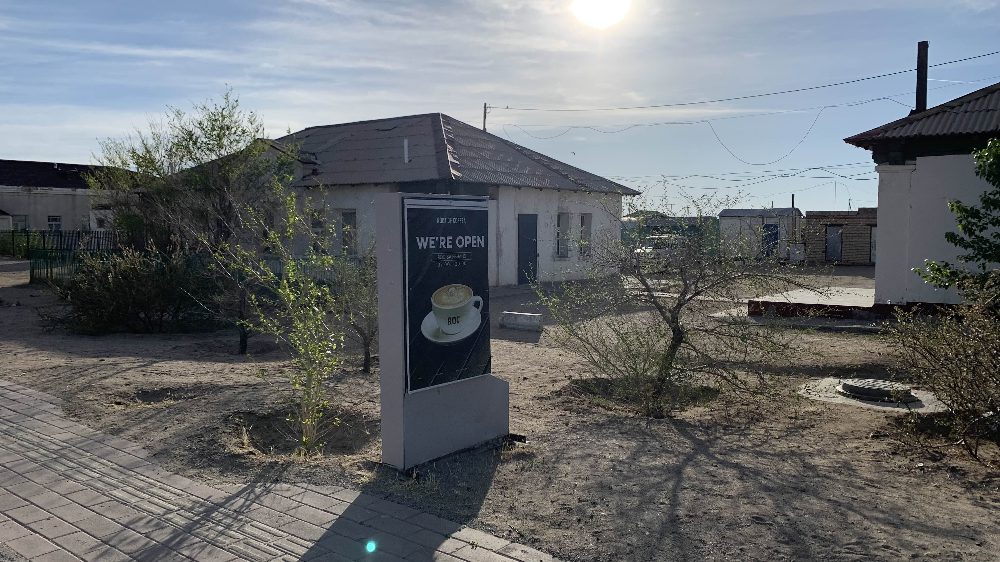
想起離開車站時似乎有個咖啡廳的招牌，想著喝杯咖啡也好，於是又繞回車站。仔細看招牌後的地圖，店址在城市的另一端。
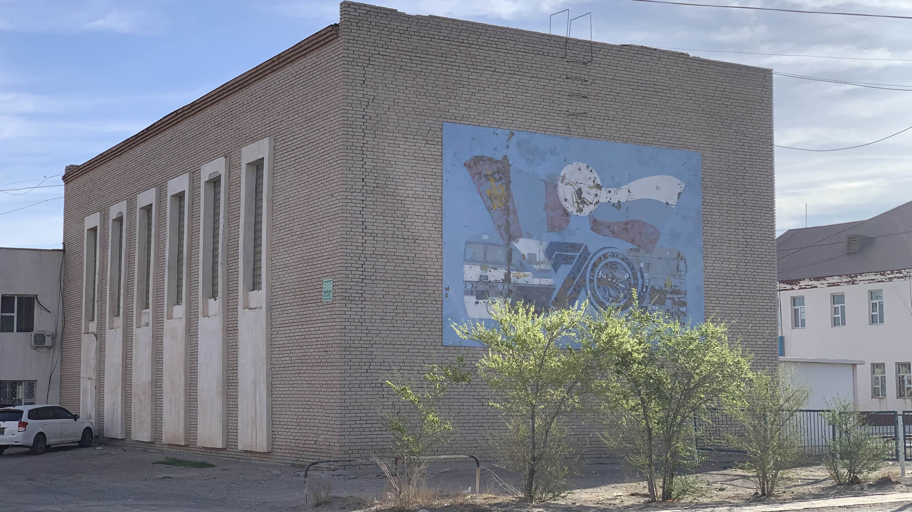
賽音山達有不少這樣的紅磚建築，這面牆上畫的70和下方火車標誌，也許是通車70週年？
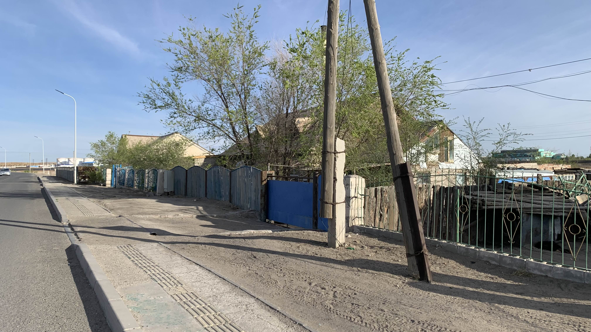
市區規劃分成兩類，一種是火車站旁這類俄式矮平房，沿著中軸線排列，平房和道路之間會有花園一樣的空地，房屋的入口未必面向道路，有的在背面，有的在側邊，大部分是抬高地面，踩上幾步階梯後門外有玄關和木製扶手。另一種新型集合住宅則呈現之字形未鋪裝柏油的路面，不太確定原因，但是以土路上的碎玻璃和迂迴曲折的地形，應該很難攻陷，唯一要考量的是自家車輪胎也會插在這些玻璃上。
就這麼繞了一小時，終於決定放棄蘋果汁。中午前有難得的順風，必須儘早啟程。決定天黑前務必抵達下一個城市，到時一定要再買一瓶蘋果汁。
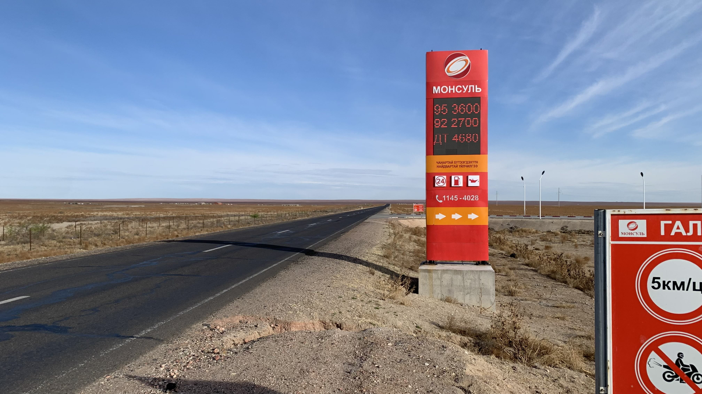
不確定是不是全國統一油價，如果要自駕遊可以參考一下。
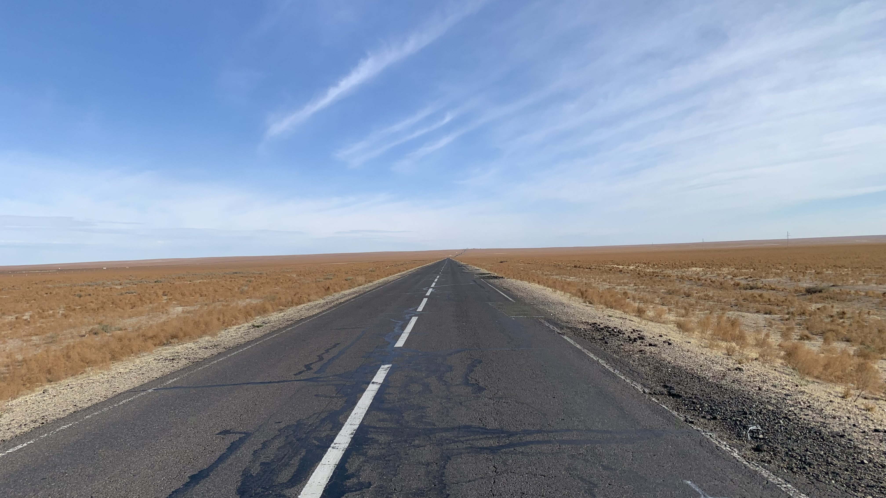
地貌已經從黃沙轉為乾硬多色的草叢，十分有趣，明明只是一直踩著踏板，每天卻有如此顯著的變化。
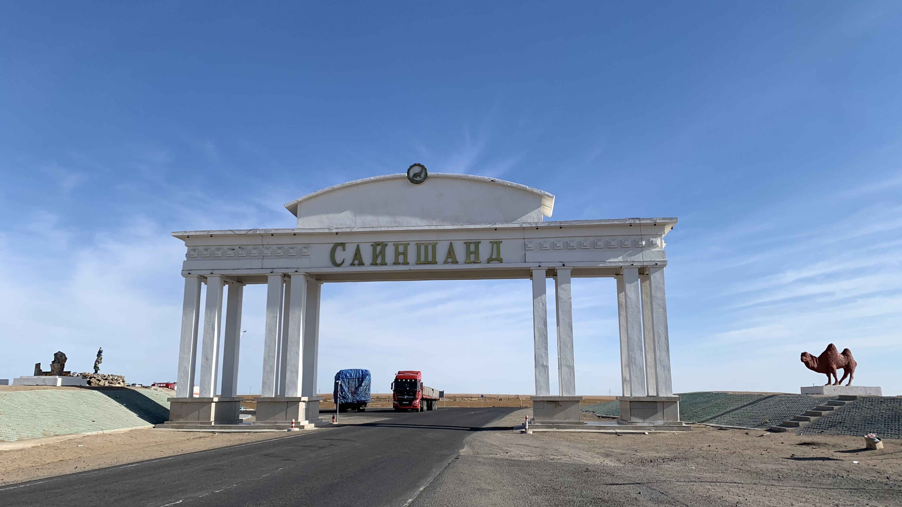
與扎門烏德相同，離開市區一段距離後出現這樣的城門，特色動物同樣是駱駝。
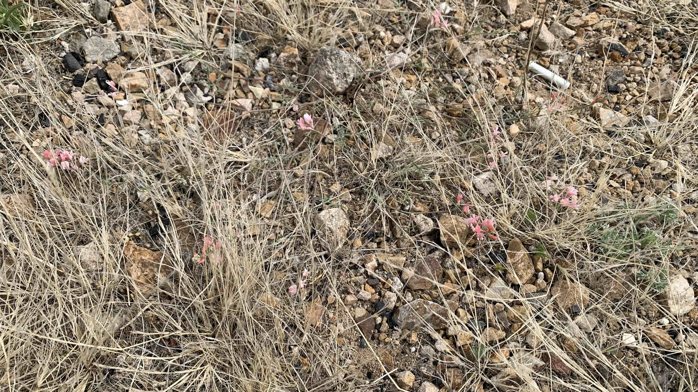
停下來喝水休息時發現腳邊出現粉紅色小花，已經好久沒看到土色、枯草色、藍色白色與沙色以外的顏色，此時看到久違的粉紅色異常驚喜。自己對於所謂戈壁地形實在無知，原以為是寸草不生之地，因此無論是花本身還是粉紅色本身在這裡出現都令人震撼。
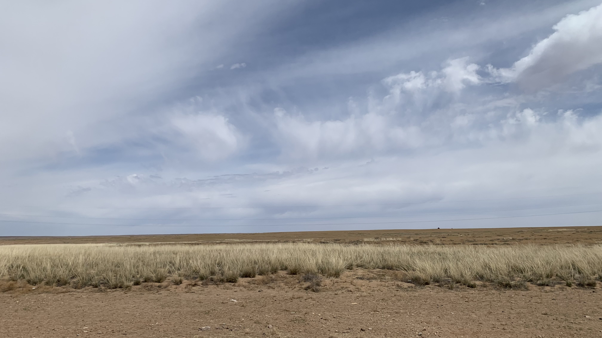
沒有了中國的防火旗幟，發展出以草叢尖端動態看風向，以雲的流動速度看風速的技能。不確定照片能否看出來，但此刻風頗大。
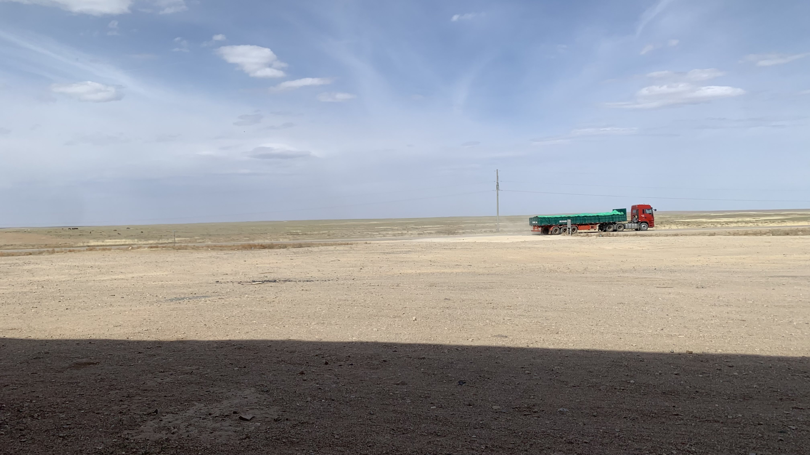
下午兩點側風實在太強，找到一間同樣沒開的餐廳避風。只剩10公里了，但剛剛經過幾次卡車亂流後膝蓋有些刺痛。打算休息半小時出發，今天超過安全值，希望雙膝安好。
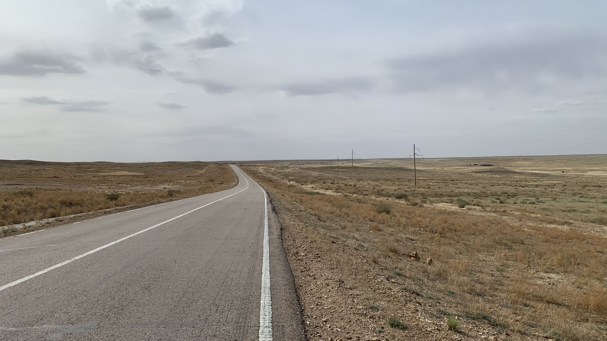
騎了一段路發現進入眼睛的景色似乎有異。已經不是前兩天那樣簡單純粹的感覺。
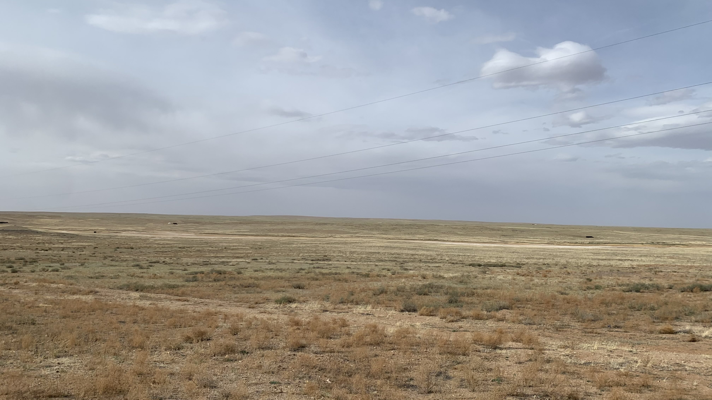
在二連浩特時查過命名由來，是斑駁雜色的意思，但是這裡比起二連更加斑駁。枯草團、綠色矮叢、青黃不接的乾草和這幾天逐漸冒出地面的綠芽，搭配土色紅色的礫石地面，這用色很高級啊。
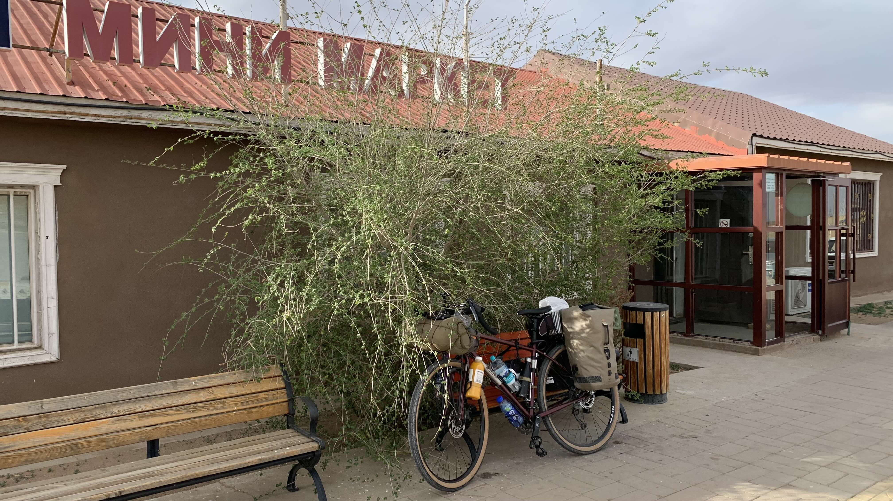
為了不浪費今天的風向，硬是在下午六點前抵達129公里外的Airag。進城時看到第一間商店就立刻停下二十三號，癱在門前休息。超市的配色和今天看到的地貌一樣，磚紅與赭石色的招牌和屋頂、著粗糙質感的暖沙色牆面與紅褐色金屬門、白色窗框、木質長椅和門前的垃圾桶、黑色的金屬邊緣，還有穿越灰藍色天空，經由嫩綠與黃綠色植栽晃動的細枝條過濾後照在灰磚與黃沙上的陽光。
這種細枝條的矮樹和中國韓國看到的有粗壯支幹的柳樹不同，由於並不具備明確的塊面和邊緣輪廓，因此具有過渡的功能。綠色的尖端在赭紅色、沙色的背景前，反映不可見的風和陽光的動態，並藉由光線將天空到地面之間連接在一起。這種「斑駁的動態複合戈壁色」很令人感到放鬆。
走進商店買了一瓶立頓檸檬紅茶和早上一直堅持想喝的蘋果汁，喝光紅茶後，伸直兩條腿，整個人呈現斜面靠在長椅與地面呈現的斜角放空。
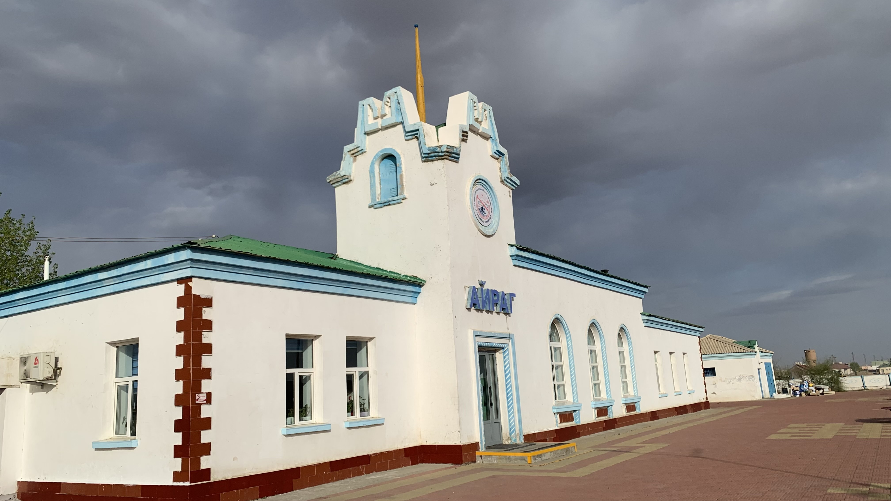
修息一陣，問了超市店員這裡是否有合適的住處，他往火車站的方向指。那今天就睡在火車站吧！這裡的車站比賽音山達小很多，一時找不到入口，看到側邊圍欄有個小門直通月台，就推著車走了進去。
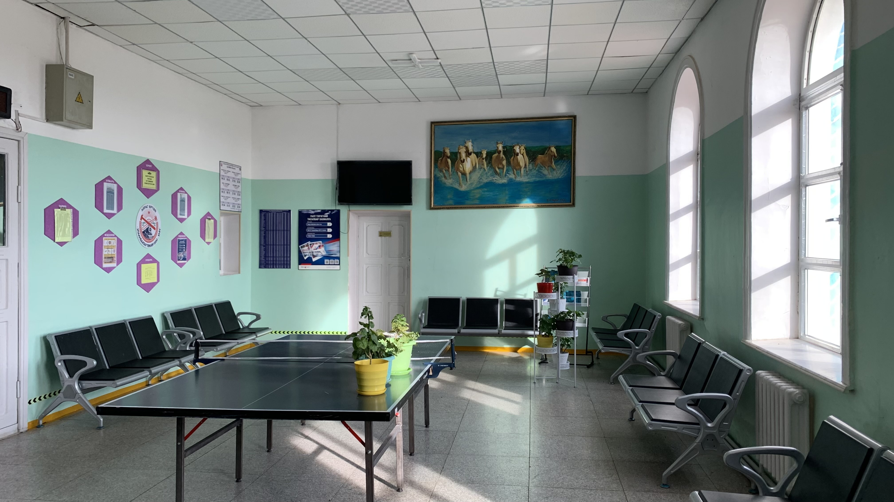
詢問正在替廁所大門刷上紅褐色油漆的站務員可否讓我在此過夜，他很乾脆地點頭說：「可以喔，但是會很冷。」一邊說一邊把頭往後方大廳建築擺。興高采烈推著車進入大廳，竟然還有桌球桌？椅子是有軟墊的，中間也沒有扶手間隔，大廳裡有小盆栽裝飾，看來乾淨整潔，不像是會有醉漢或流浪漢在此鬧事的樣子。
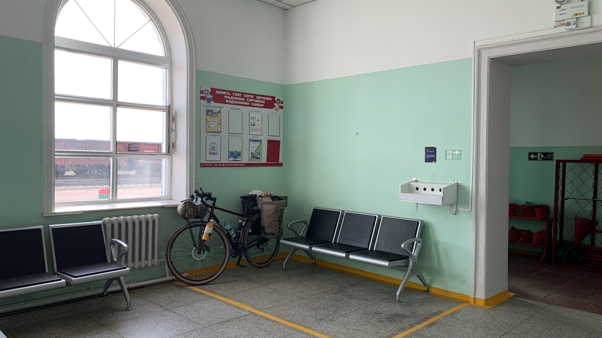
將二十三號停在大廳角落，天色未暗，走到大廳外參觀，看到有位站務員正在拉水管準備澆花。用翻譯機說我可以幫忙，結果他叫來兩個在員工休息站門口閒聊的同事來陪我聊天。兩位都是30歲上下，英語幾乎無法溝通，尬聊之際走來一位工頭樣的人，年輕的橘背心站務員笑著說：「My boss！」，於是我們三人就坐在廁所外的水泥地向Boss揮手，咧嘴笑著說：「Hi, boss!」
按照Boss的反應，我應該可以睡在這裡。開著暖氣的大廳就是我的房間，今晚應該能睡得很好。
今日花費： 果汁 4700元